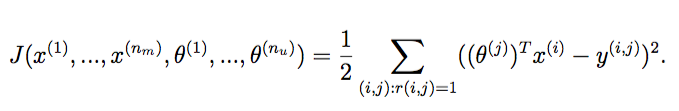
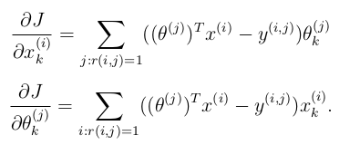
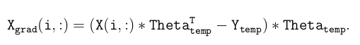

AndrewNg 机器学习习题ex6-anomaly detection and recommendation
这是最后一个练习了，共有两个算法，第一个是异常检测，第二个是推荐系统。
异常检测
之前写过了这里就不再重复了：Python实现异常检测算法
推荐系统
推荐系统使用的算法就是协同过滤（collaborative ltering learning algorithm）
首先来看提供的数据都有些什么，更具PDF可知，有5个文件是我们需要的数据集合。
| 数据集名称 | 内容 |
|---|---|
| movie_ids.txt | 电影的列表 |
| ex8data1.mat | 用于异常检测的第一个示例数据集 |
| ex8data2.mat | 用于异常检测的第二个示例数据集 |
| ex8_movies.mat | 电影评论数据集 |
| ex8_movieParams.mat | 为调试提供的参数 |
导入库和检查数据集
ex8_movies.mat中有两个标签的数据，Y是1682个电影的评分，每个电影有943条五个级别的评分，R是一个和Y相同维度的二进制数组，0代表评过分，1代表没评分。
% Notes: X - num_movies (1682) x num_features (10) matrix of movie features
% Theta - num_users (943) x num_features (10) matrix of user features
% Y - num_movies x num_users matrix of user ratings of movies
% R - num_movies x num_users matrix, where R(i, j) = 1 if the
% i-th movie was rated by the j-th user
1 | #!/usr/bin/python |
cost function

在对feature运算时，我们先把params serialize为只有一个维度的数组，通过deserialize函数来恢复为原状。
1 | def serialize(X, theta): |
按照练习8中的参数cost输出为22，验证结果“
1 | # 按照练习中给出计算结果为22 |
计算一下总的cost
1 | # total readl params |
gradient function


1 | n_movie, n_user = Y.shape |
regularized cost and gradient

1 | # regularized cost |
parse movie_id.txt
1 | # parse movie_id.txt |
给电影打分
1 | # reproduce my ratings |
数据预处理
把我们的评价插入到所有电影的评分中去，把参数theta和X处理为正态分布。
1 | # prepare data |
训练
1 | # training |
稍等一会儿得到一下结果1
2
3
4
5
6
7
8
9
10 fun: 24268.448311691616
jac: array([-12.49378802, 14.209063 , -6.75343791, ..., 0.61519582,
-1.32599207, 0.58813019])
message: 'Converged (|f_n-f_(n-1)| ~= 0)'
nfev: 219
nit: 14
status: 1
success: True
x: array([-0.30795529, 0.88620348, -0.10899471, ..., 0.18986581,
-0.28537047, -0.11540767])
检查推荐结果
y=np.argsort(x)将x中的元素从小到大排列，提取其对应的index(索引)，然后输出到y1
2
3
4
5
6
7
8
9
10
11
12
13
14X_trained, theta_trained = deserialize(res.x, n_movie, n_user, n_features)
print(X_trained.shape, theta_trained.shape)
prediction = X_trained @ theta_trained.T
my_preds = prediction[:, 0] + Y.mean()
idx = np.argsort(my_preds)[::-1] # descending order
print(idx.shape)
# top ten idx
my_preds[idx][:10]
for m in movie_list[idx][:10]:
print(m)
1 | Godfather, The (1972) |
每次得到的结果有个别差别，但是七成时没有变化的。